WW2 중 항모에서의 야간 작전 (4) - 어뢰와 조명
게시: 2025-03-13T06:30:13+09:00
<아무것도 무섭지 않은 전함에게도 이건 무섭다> 개발된지 얼마 안된 어뢰가 진짜 심각한 위협으로 다가온 것은 영국 해군이 어뢰를 주무기로 사용하는 어뢰정(torpedo boat)이라는 특수함정 HMS Lightning을 취역시킨 1876년부터. 작고 빠르고 건조 비용도 적게 들어가는 어뢰정들이 크고 둔중한 장갑 전함에 재빨리 접근하여 어뢰를 쏘면 어떻게 대응할 것인가? 원래 장갑 전함들의 장갑판은 흘수선 위에 집중되었고, 흘수선 아래 깊숙한 곳까지는 보호하지 못했음. 아무리 강력한 포탄이라고 해도 물 속에 들어가는 순간 속도가 확 떨어졌기 때문에 수면 바로 아래 부분 정도까지만 장갑판을 두르면 충분했기 때문. 그런데 그보다 더 아래 부분, 그러니까 장갑판의 보호를 받지 못하는 곳을 어뢰가 때리면 전함은 끝장.
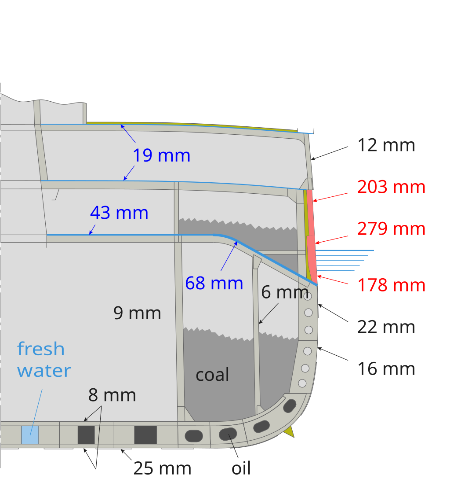
(이건 어뢰정에 대한 대비를 고려하여 설계되고 1906년 진수된 HMS Dreadnought의 장갑판의 구조. 수면 아래 깊숙한 곳은 장갑판이 무의미하므로 제거. 대신 격리공간(bulkhead)을 만들어 어뢰에 의한 침수에 대비. 원래 벌크헤드란 격리공간을 뜻하는 것이 아니라 격리를 위해 만든 벽을 뜻하는 것.) 세계 최초의 어뢰정은 줄곧 흉악한 물건을 발명해내던 영국이었지만, 어뢰정에 의해 가장 크게 위협받던 것도 다름 아닌 영국해군. 당시 가장 많은 수의 장갑 전함을 보유하고 있던 것이 영국해군이었기 때문. 특히 어뢰정 HMS Lightning가 취역한지 불과 2년 뒤인 1878년 프랑스 해군이 그와 비슷한 어뢰정인 Torpilleur No.1을 진수시키면서 영국해군의 고민은 더욱 심각해짐.
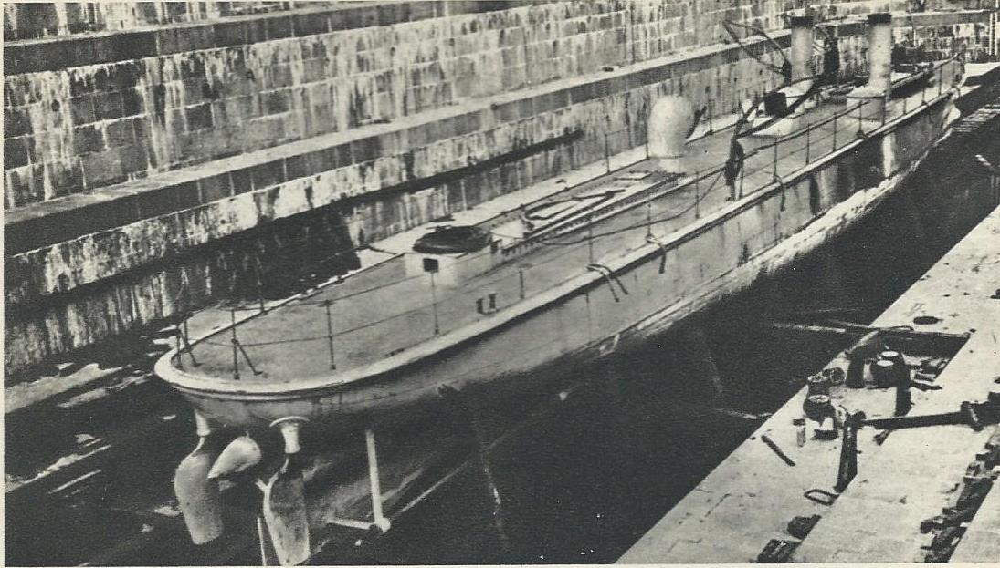
(영국 해군에 공포로 다가온 프랑스 최초의 어뢰정 토피외르 뉘메호 앙 (Torpilleur Numéro Un). 쉘부르 항구 드라이도크 안의 모습. 영국해군의 공포와는 달리 실제로는 여러가지 기술적 문제로 인해 실패작에 가까왔고, 딱 7척만 건조됨.) 어뢰정은 작은 연안용 함정이므로 대서양이나 북해, 발트해 등의 넓은 바다에서 영국 해군이 제해권을 장악하는 것에는 별 위협이 되지 않는다는 소리도 있었지만, 프랑스와 영국 사이의 칼레 해협이 무척 좁기 때문에, 프랑스 항구에서 언제든 어뢰정이 튀어나와 칼레 해협을 순찰하는 영국 전함들을 기습할 수 있었음. 게다가, 만약 저런 어뢰정들이 떼를 지어 밤에 습격해오면 어떻게 할 것이냐 하는 질문에 대해서는 답이 나오지 않았음. 당시 전함에 대구경 주포만 있는 것이 아니라 작은 구경의 부포도 많이 달려 있으니 그걸로 원거리에서 쏘면 되는 거 아닌가? 그게 그렇게 쉽지가 않았음. 전노급(pre-Dreadnought) 전함들이 우글거리던 1902년까지만 하더라도 유럽 해군의 주포 사격 훈련시 목표물과의 거리는 불과 2km가 안 되었음. 파도에 흔들리는 전함에서의 함포 사격 정확도가 그만큼 떨어졌던 것. 그러니 부포들의 유효사거리는 더욱 떨어졌음. 게다가 당시의 석탄 때는 느린 전함들에는 사격통제장치(gun director)가 구현되어 있지 않았으므로, 각각의 포탑 및 포좌에서 알아서 목표물을 포착하고 사격해야 했는데, 거대한 전함이나 순양함은 몰라도 조그맣고 빠른 어뢰정에 대한 조준 유지가 쉬운 것이 아니었음. 특히 야간에는 거의 불가능. 각 포탑의 조준수가 어뢰정을 계속 노려보고 있다고 해도, 야간 포격시 번쩍하고 터지는 발사 섬광 때문에 어두운 바다에서 어뢰정을 놓치기 일쑤였던 것.
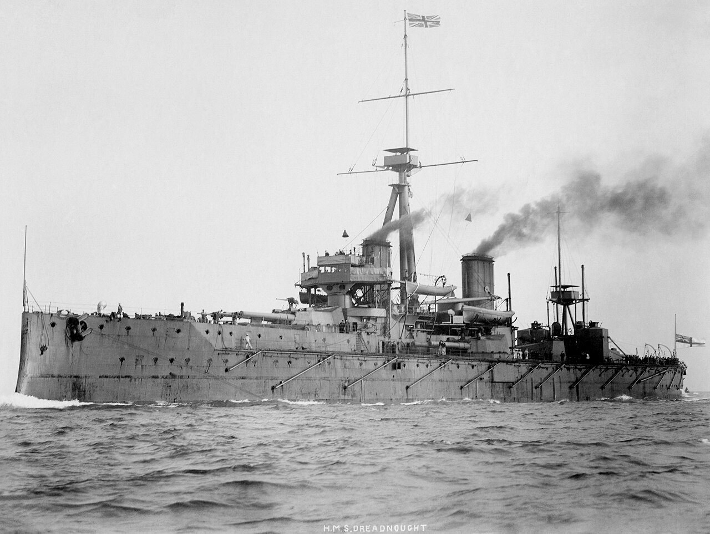
(다들 이름을 들어보셨을 HMS Dreadnought (2만톤, 21노트). Dread(공포) + nought(아무것도 아니다), 즉 아무것도 무섭지 않다는 뜻으로 지어진 이름이지만, 어뢰정은 무서웠다고.)
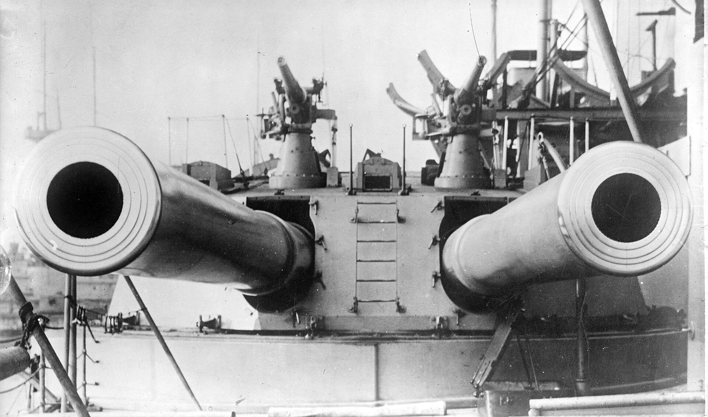
(드레드노트의 12인치 주포. 포탑 위에 얹어놓은 작은 대포 2문은 12파운드 포로서, 저건 대공포가 아니라 어뢰정에게 사격하기 위한 부포임.) <문제는 조명> 전함이 어뢰정을 상대할 때 가장 큰 문제는 조명. 놀랍게도, 당시엔 아직 야간에 바다를 밝혀줄 조명 기술이 없었음. 일단 전기 아크(arc)에 의해 빛을 내는 탄소 아크 램프(carbon arc lamp)는 19세기 초반에 발명은 되었으나, 그게 거리 조명에 쓰이기 시작한 것은 19세기 말엽이었을 정도로 아직 쓸 만한 전기 조명이 없었음. 1877년 프랑스 육군의 망젱(Alphonse Mangin) 대령이 이중 거울을 이용한 탄소 아크 램프 탐조등을 발명하기는 했으나, 출력도 약해서 해전에 사용할 수준과는 거리가 멀었음.
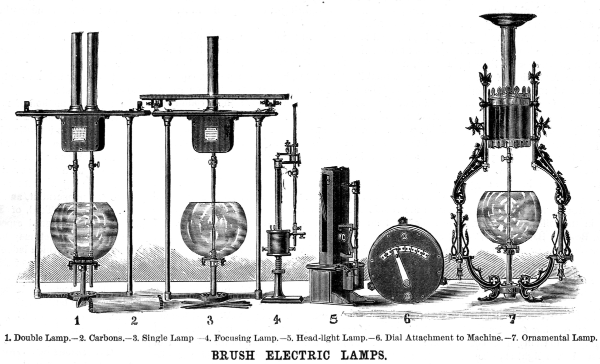
(19세기 후반 미국에서 제조된 가정용 탄소 아크 램프) 그나마 군용으로 쓸 만한 탐조등이 나온 것은 1890년대. 독일에서 슈케르트(Schuckert) 탐조등을 만들자 그와 경쟁하기 위해 미국의 제네럴 일렉트릭사에서 무게 2.7톤, 직경 1.5m의 대형 탐조등을 만들어 1893년 시카고 세계 콜럼비아 박람회에 출품한 것. 이 탐조등에는 미육군도 해안 방어에 도움이 되겠다 싶어 일부 투자하게 되었음.
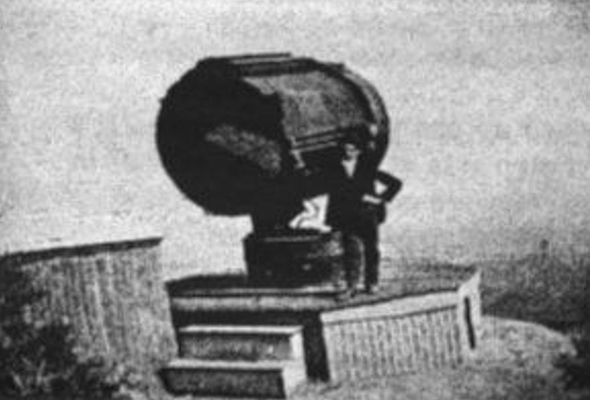
(그러나 제네럴 일렉트릭이 출품했던 이 탐조등은 결국 엉뚱하게도 어떤 캘리포니아 사업가가 사들여 자신의 로우(Lowe) 산 관광지 홍보를 위해 로우산 꼭대기에 설치.)
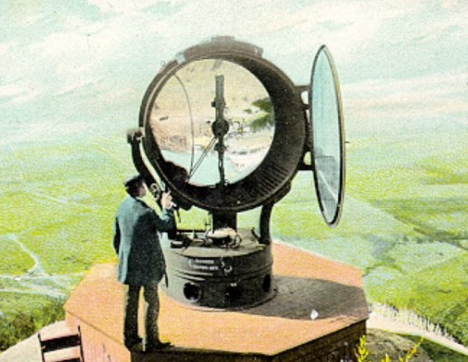
(로우산 관광지의 탐조등을 그린 다른 그림. 이렇게 화제를 끌던 명물인 이 탐조등이 결국 어떻게 되었는지는 희한하게도 별로 알려져 있지 않다고.) 따라서 19세기 말, 각국 해군에서는 탐조등을 이용하여 야간 해전을 벌일 수는 없었음. 하지만 조명탄이 있지 않나? 있었음! 1859년 미국의 발명가이자 사업가인 Martha Jane Coston이라는 여성이 자신의 이름을 딴 Coston flare라는 것을 발명하고 특허를 출원. 원래 이 코스톤 플레어는 해양 신호용, 가령 조난 신호 같은 것을 알리기 위해 만든 것이지만, 미국 남북 전쟁에서도 조명탄으로도 많이 쓰였고, 특히 북부군이 남부 해안에 대해 해상 봉쇄를 펼칠 때 밀수선 등을 찾기 위해서도 많이 사용되었음.
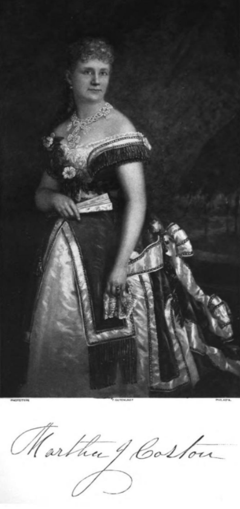
(당시 남성 위주 사회였던 미국에서, 여성의 몸으로 조명탄을 발명하고 그것으로 직접 사업까지 벌였던 마사 코스턴. 어떤 의미에서는 '바람과 함께 사라지다'의 스칼렛 오하라라고 할 수 있음.)
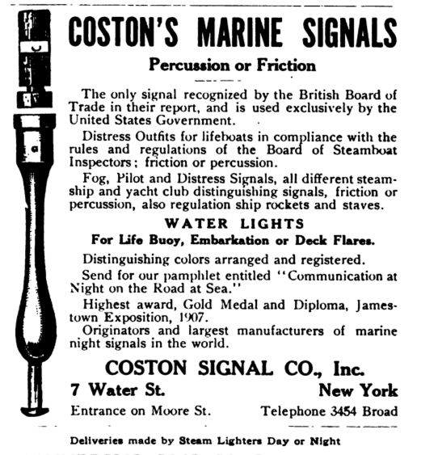
(1913년에 나온 코스턴 조명탄에 대한 광고지.) 특히 19세기 후반, 미해군 장교인 Edward Wilson Very라는 사람이 그런 조명탄을 하늘 높이 쏘아올리는데 사용될 권총인 Very pistol을 발명. 이 물건은 19세기 말부터 전세계적으로 많이 사용됨. 이러면 이제 하늘 높이 조명탄을 잔뜩 쏘아올려 밤바다를 환히 밝혀놓고 야간 해전을 싸울 수 있게 된 것 아닌가?
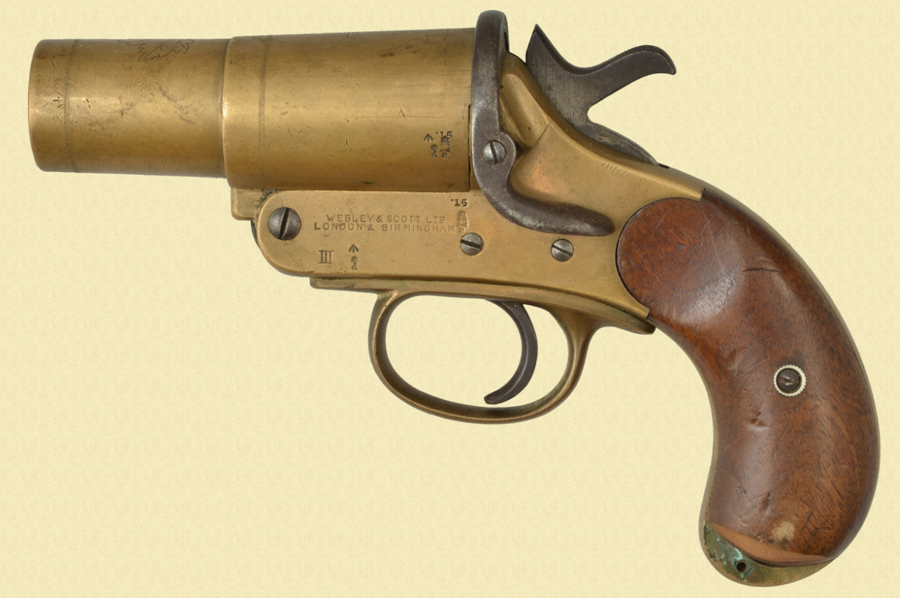
(Very pistol. 이걸 발명한 Very라는 사람은 떼부자가 되었...어야 할 것 같은데 검색해봐도 별로 정보가 나오지 않는 것이 큰 돈을 번 것 같지는 않음.)
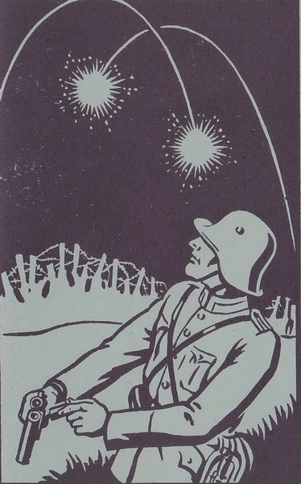 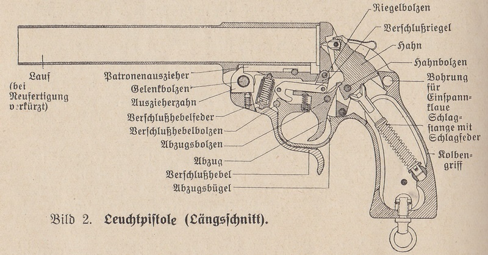
(WW2 기간 중 독일군이 사용한 조명탄 발사기는 Leuchtpistole(로이히트피스톨, 조명 권총)이라는 이름으로 불렸는데, 1934년 정도에 도입됨. 물론 그 이전에는 다른 모델이 있었음.) 아니었음. 여전히 야간 해전은 불가능. 이유는? 앞서서 1902년에는 해군 주포 사격 훈련시 상정하는 거리가 약 1.8km였다고 했는데, 불과 12년 후인 1914년에는 표준 훈련 사격거리가 무려 18km로 크게 늘어남. 그 12년 동안 세계 해군에는 엄청난 기술 혁신이 있었던 것. 이젠 거의 수평선에서 가물거리는 전함에 대고 포격을 하는 상황이 됨. 그런데 주포의 유효 사거리가 늘어난 것과 야간 해전과는 무슨 상관이 있는 것일까? 바로 Very piston로 쏘아올리는 조명탄은 아군 상공을 환하게 비추기 때문. 야간에 해전을 벌일 때 적을 찾겠다고 베리 조명탄을 쏘아올리는 것은 저 먼 거리에 있는 적은 찾지 못하고 오히려 아군의 모습만 훤하게 적에게 노출시키는 행위. 그건 적의 저격병에 노출된 상황에서 그 저격병 찾겠다고 횃불을 드는 것과 마찬가지. 이 문제를 해결하는 방법은? 조명탄을 대포로 저 멀리까지 쏘아서 적 위치 상공에서 터뜨리는 것. 그러나 그 기술을 구현한 star shell은 WW1 이후에나 나왔으며, 영국해군과 독일해군이 맞붙은 1916년 유틀란트 해전만 하더라도 영국해군은 날이 저물자 더 이상의 추격은 포기.
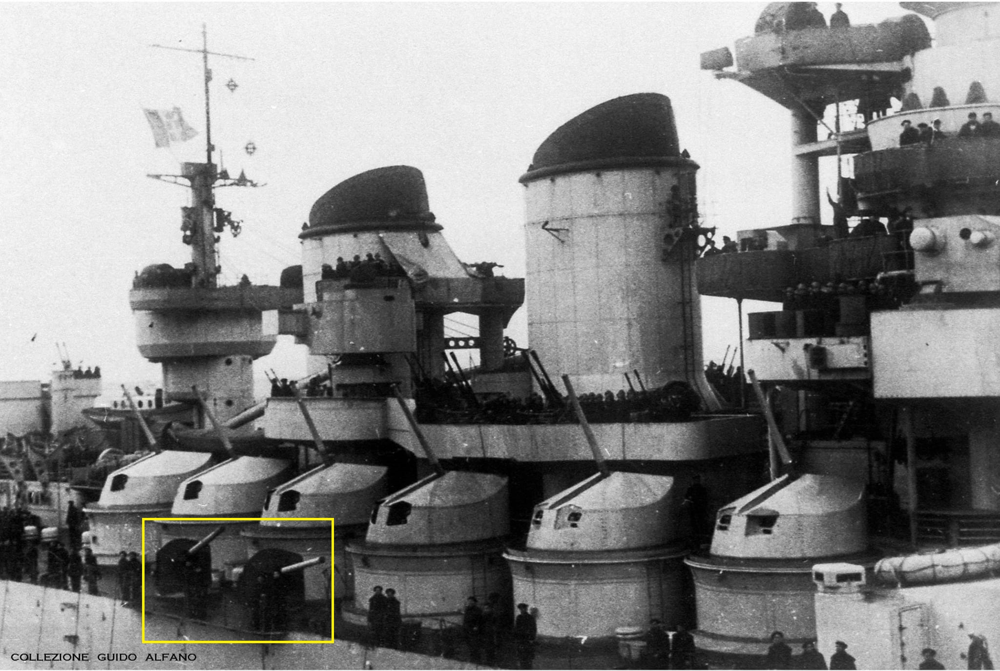
(WW2에서 활약한 이탈리아 해군 Littorio급 전함의 양현에는 뜬금없이 보기 흉한 120mm 포가 2문씩 달려있음. 사진 속 90mm 부포 탑재된 아름다운 부포탑 아래에 보기 흉한 120mm 포가 2문 보임. 저 대포들은 조명탄인 star shell 전용. 원래 수십 년전 영국에서 사들여 사용하던 4.7인치 속사포(QF gun)들을 저렇게 조명탄 전용포로 재활용한 것. 당시 이탈리아 해군 전함들에는 152mm 주포 및 90mm 부포를 위한 조명탄이 없어서 저렇게 했던 것.) 아무튼 1870년대~1900년대까지는 적절한 조명 수단이 없다보니 야간 해전이라는 것은 무척 곤란했고, 특히나 어둠 속에서 재빨리 움직이는 어뢰정의 위협으로 인해 더욱 위험한 일이 되었는데, 그렇게 야간 해전을 회피하는 경향은 가진 전함이 많은 영국해군이 특히 심했음. 그러나 그런 경향은 WW2가 임박하면서 바뀌게 됨. 그 이유는...